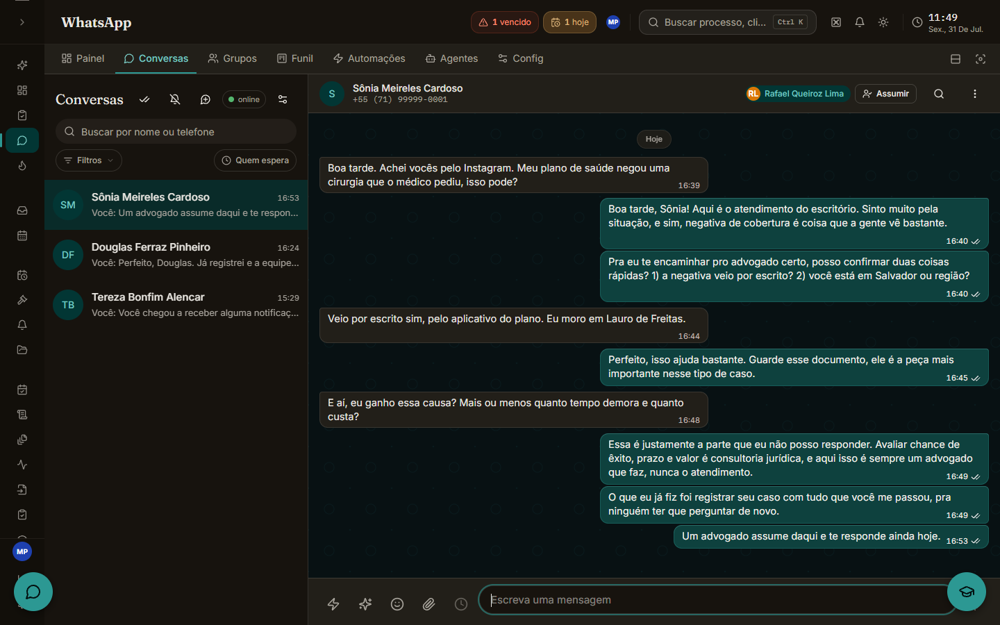
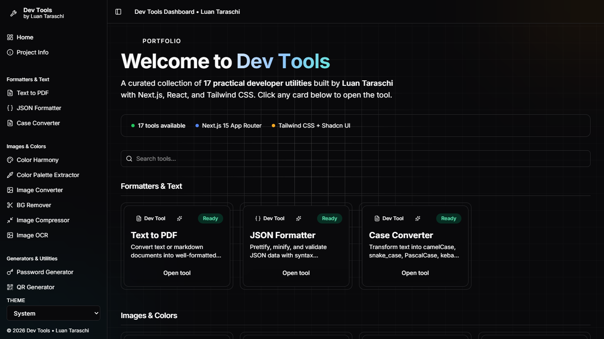
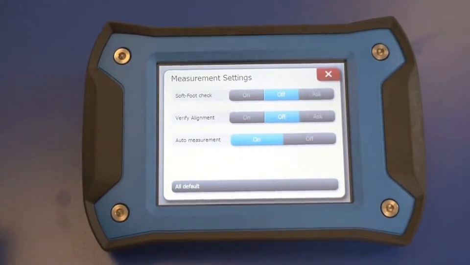
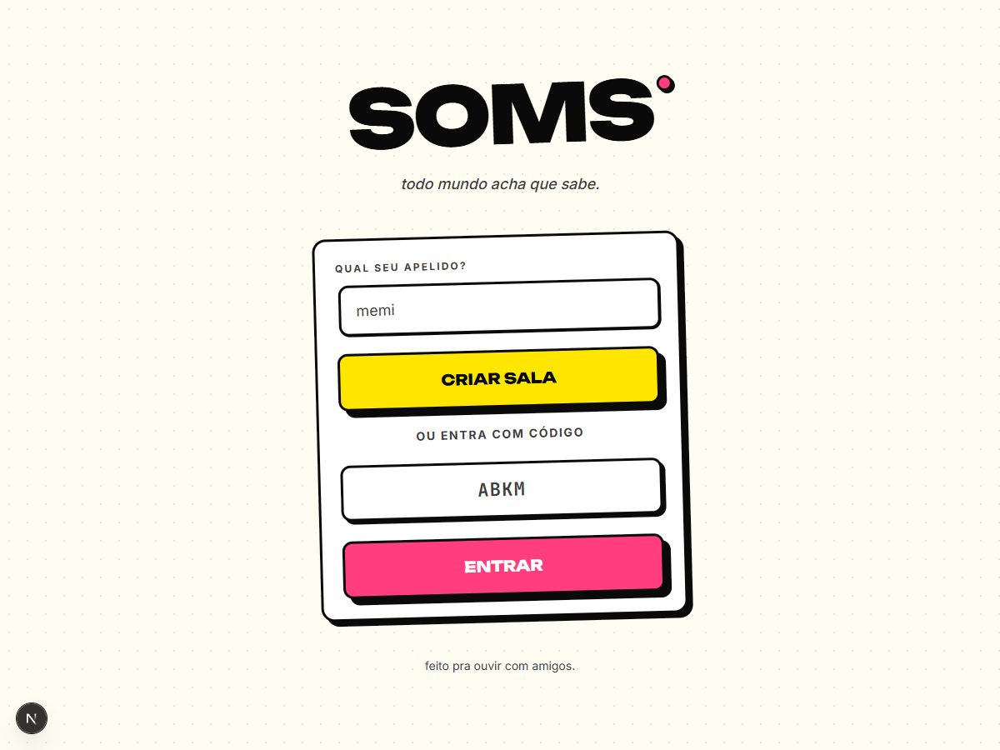
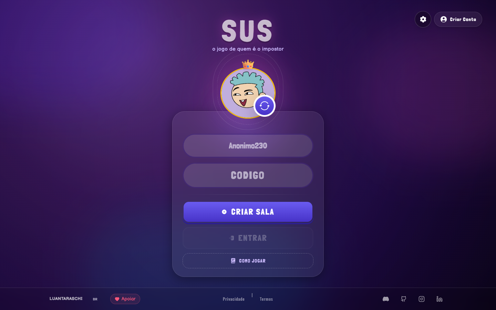

React · Next.js · JavaScript · HTML · CSS
portfolio/2026
Luan Taraschi
Desenvolvedor full stack · automações e agentes de IA
Construo SaaS e automação de ponta a ponta e coloco agentes de IA para trabalhar em operação real: CRMs de WhatsApp e fluxos de atendimento que processam cerca de mil conversas por mês.
- Base
- Salvador, BA (Brasil)
- Disponível
- freela e efetivo
- Hoje mexendo com
- LangGraph, MCP e Claude Code
- Escrevendo código desde
- 2019
1-bit · bayer 8×8 mova o cursor
sobre.txt
Como eu trabalho
Sou desenvolvedor full stack e estudante de Engenharia de Software na UCSAL, com conclusão prevista para 2027.2. Trabalho desde o primeiro semestre da graduação, sem interrupção: hoje construo SaaS e automação com React, Next.js, Node.js, PostgreSQL e Docker.
Já são cinco clientes atendidos, entre escritórios de advocacia e agência de viagem, e eu faço o ciclo inteiro: levantamento de requisitos, arquitetura, modelagem de banco, integrações, deploy e suporte em produção. Prefiro entregar o fluxo que resolve o problema do cliente a entregar tecnologia bonita que ninguém usa.
A parte que mais me interessa agora é orquestração de agentes: fazer a IA assumir a triagem repetitiva e devolver para o humano só o que exige julgamento. É o que estou construindo em produção com LangGraph, MCP e integrações via API.
- Função
- Desenvolvedor full stack
- Base
- Salvador / BA
- Foco
- SaaS, automação e agentes de IA
- Formação
- Eng. de Software, UCSAL (2027.2)
- Status
- aberto a projetos
- Idiomas
- Português nativo · Inglês fluente
projetos/ · 05 itens
O que eu construí
Sistema com usuário do outro lado, que precisa acordar funcionando toda manhã.

JVB: ERP jurídico sob medida
Um escritório inteiro rodava em planilha e WhatsApp; hoje roda num sistema só. 124 tabelas, 881 endpoints tipados, 3.500 testes, tudo feito por uma pessoa.

Triagem por IA no WhatsApp
Cerca de mil conversas por mês, 100% triadas por agente antes de chegar a alguém. Com guardrail: o bot nunca dá consultoria jurídica.

Dev Tools
Dezessete utilitários de dev num painel só: OCR, remoção de fundo, QR, conversão de imagem, gerador de CSS. Roda no navegador.
Gesture AI Desk
Controlar o computador com a mão pela webcam: 21 pontos por mão a 30fps, sete gestos, tudo offline e sem API nenhuma.

Seamless AI Dub
Vídeo em inglês entra, vídeo dublado em português sai: Whisper transcreve, o modelo traduz, o TTS fala e o corte volta sincronizado.
++
Tem mais no GitHub
Protótipo, experimento e coisa que nasceu de curiosidade às duas da manhã. Nem tudo virou produto, mas nada disso foi perdido.
games/ · 03 itens
Party games de navegador
Jogos pra abrir numa call com os amigos, sem instalar nada. Só que o problema técnico mais difícil que eu resolvo está aqui: manter dezenas de pessoas vendo a mesma partida ao mesmo tempo, com quem entra atrasado e quem cai no meio da rodada.

SOMS
Toca um trecho de música e todo mundo corre pra acertar o título antes dos outros. No fim, card de estatística pra jogar no grupo.

SUS
O jogo do impostor: todo mundo recebe a mesma palavra, menos um. Conversa, blefe e votação, em três modos diferentes.
08
POV
O mais recente da prateleira, e o único fora do React: Svelte com Convex atrás.
stack.cfg
Ferramentas de trabalho
Node.js · Python · Java · consumo e integração de APIs
PostgreSQL · Docker · Git · deploy e manutenção em produção
LangChain · LangGraph · Agno · Hermes · n8n · Claude Code
experiencia.log
Linha do tempo
2025 · até hoje
Desenvolvedor Full Stack · Freelancer
Software sob medida para cinco clientes, entre escritórios de advocacia e agência de viagem, com dois sistemas em produção que eu mantenho e evoluo. No maior deles o CRM processa cerca de mil conversas por mês, com 100% da triagem feita por IA. O agente classifica por perfil e intenção, e só o lead qualificado chega ao humano. Faço o ciclo completo, da descoberta ao suporte, e também a ponta comercial: proposta, apresentação e relacionamento.
2024 a 2025 · 6 meses
Orquestrador de Automações · JVB Advocacia
Comecei com automação simples: relatório semanal, resumo de notícia, compilado de e-mail, andamento de processo. Conforme fui aprendendo, fui fazendo coisa cada vez mais complexa, até nascer dali o JVB Kanban, sistema de gestão de casos que tomou conta da rotina do escritório inteiro. Hoje ele toca mais de 300 processos e tirou umas 10 horas de trabalho manual por semana de cima da equipe. Roda em PostgreSQL na Railway, com integração via MCP: a própria IA consulta o andamento dos casos e delega tarefa dentro do sistema.
2023 a 2024 · 1 ano
Estagiário de Desenvolvimento · TecnoTRENDS
Meu primeiro contato com o mercado. Um ano de desenvolvimento e manutenção de aplicações web, front e back, e a mudança de postura que não dá para aprender sozinho em casa: sair do modo projeto pessoal e trabalhar em código do qual outras pessoas dependiam.
contato.form
Bora conversar
Conta o que você quer construir. Respondo em português ou inglês.
E-mail
luantaraschi@gmail.com
GitHub
github.com/luantaraschi
LinkedIn
linkedin.com/in/luantaraschi
Telefone
(71) 98467-5555
Base
Salvador, BA · remoto ou presencial
Currículo
luan-taraschi-cv.pdf ↓